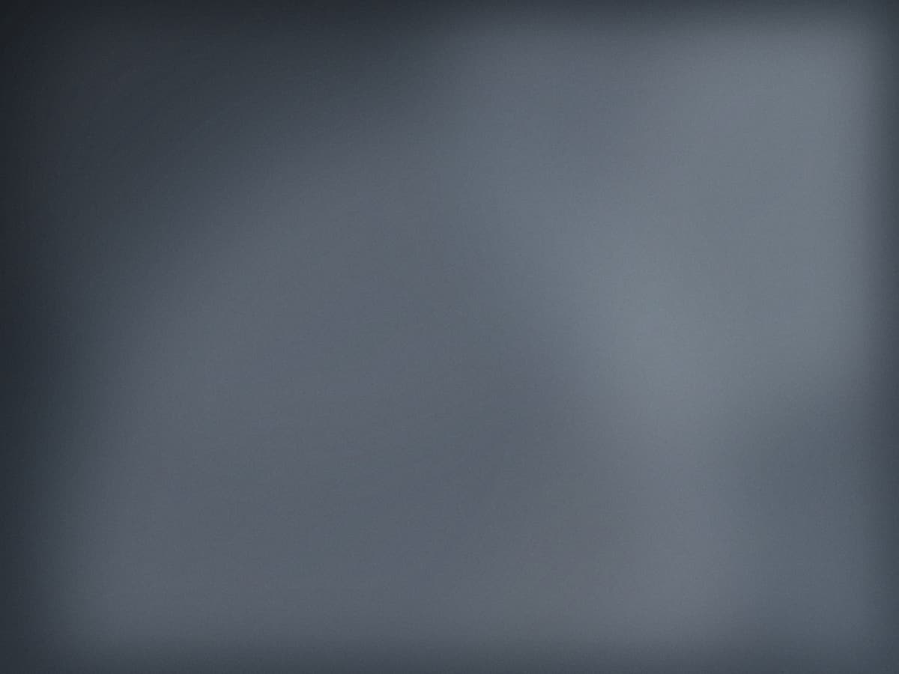
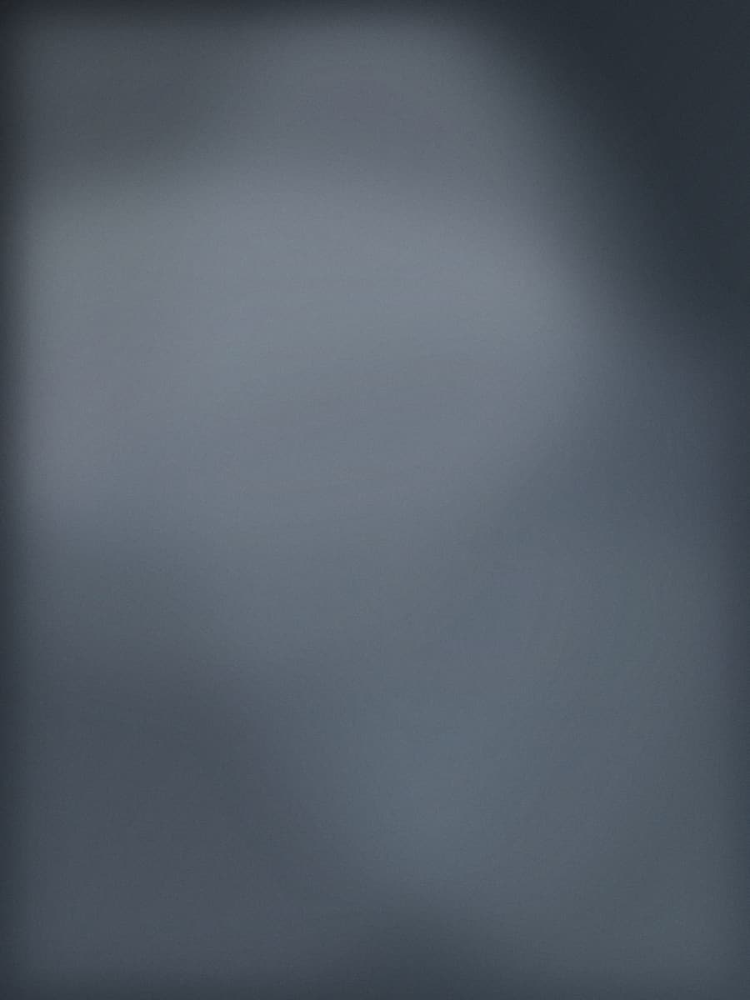
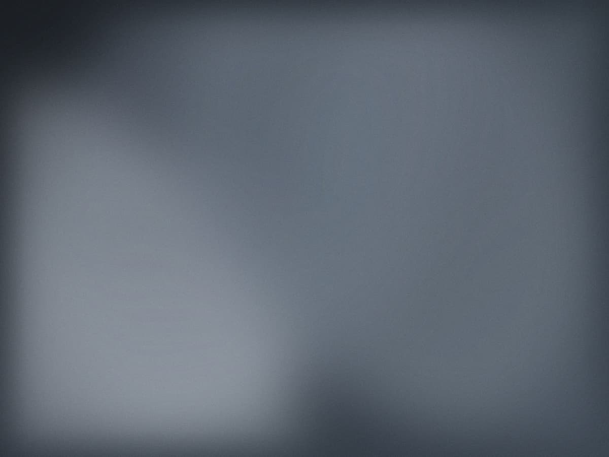
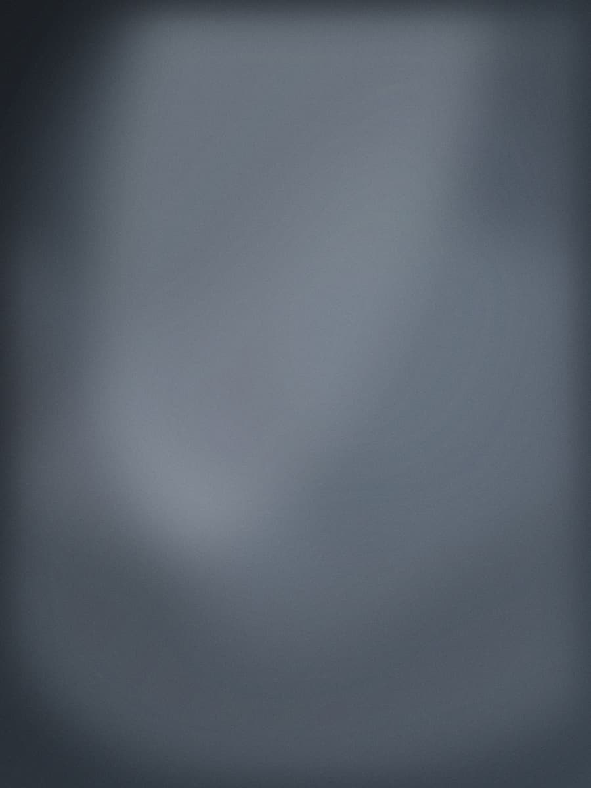
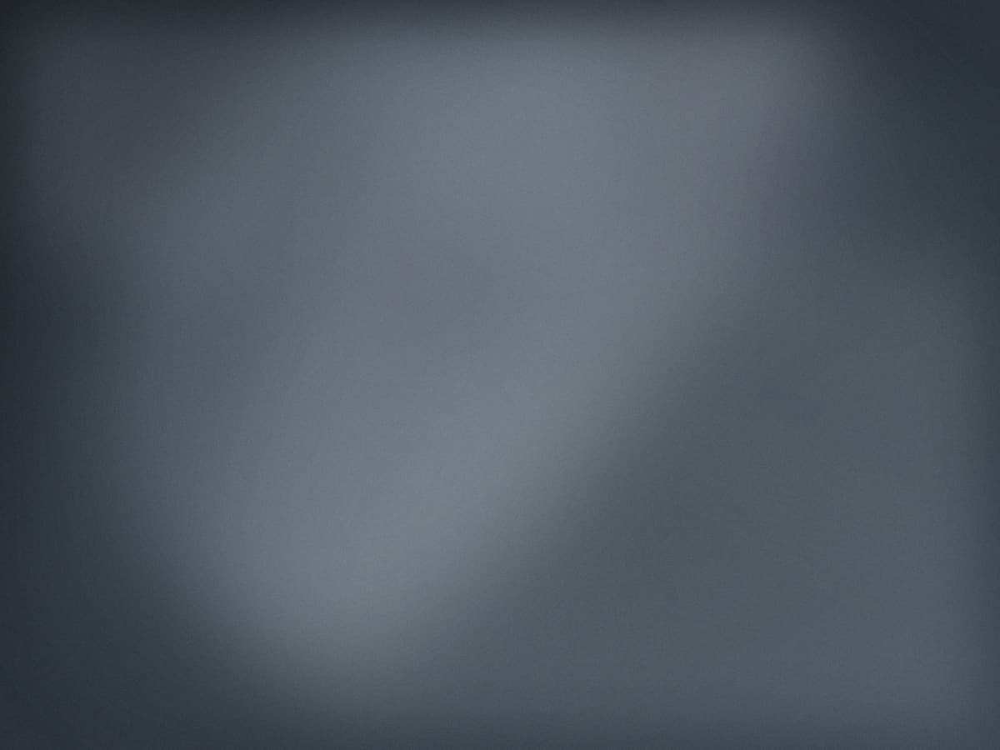
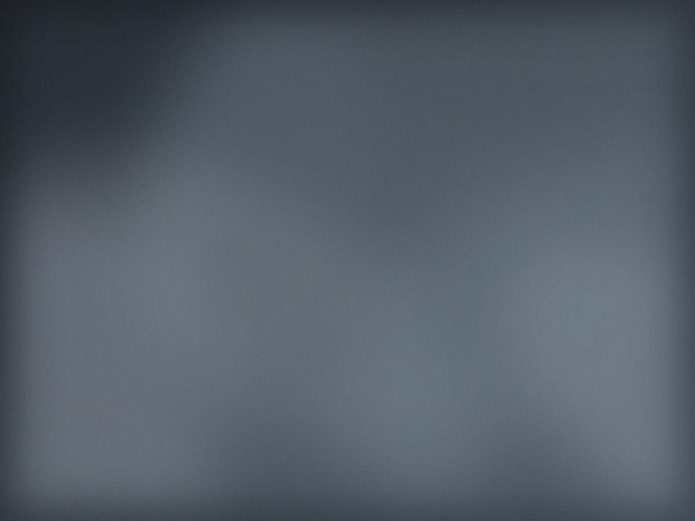
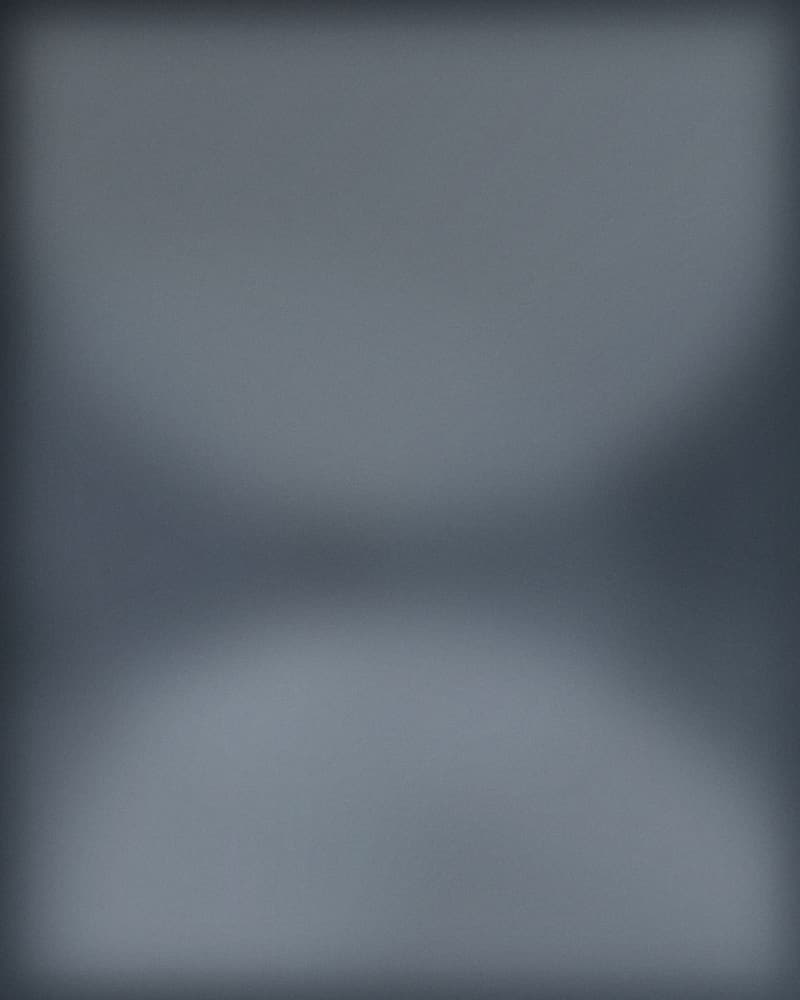

Photographie documentaire · Marseille
Regarder longtemps, photographier peu
Je travaille au long cours, souvent plusieurs années sur un même sujet, jusqu'à ce que les gens oublient l'appareil.
Voir les travaux0 %
Travaux
Une sélection de reportages menés entre 2019 et aujourd'hui.

Ceux qui rentrent à l'aube
Vieux-Port, Marseille — 2019-2022

La Ciotat, dernier chantier
La Ciotat — 2021

Dimanches à l'Estaque
Marseille 16ᵉ — 2020-2023

Transhumance
Alpes-de-Haute-Provence — 2023

Salle d'attente
Commande éditoriale — 2024

Avant la démolition
Saint-Mauront — 2025
Série en cours
« Ce qui reste debout » — un travail au long cours sur les quartiers nord de Marseille, commencé en 2024, prévu pour durer cinq ans.
Trois séjours par an, un mois à chaque fois. Aucune photographie n'est publiée avant la fin.
Suivre le projetÀ propos
Née en 1989, formée à l'ENS Louis-Lumière, installée à Marseille depuis 2016. Je travaille en argentique moyen format et en numérique, selon la durée du sujet.
Mes photographies ont paru dans Le Monde, Libération, De l'air et Polka. Deux expositions personnelles, à Arles en 2022 et à la Friche la Belle de Mai en 2024.
Je réponds aux commandes éditoriales, institutionnelles et corporate, à condition d'avoir le temps de faire les choses correctement.

Travaillons ensemble
Pour une commande, une exposition ou un tirage, écrivez-moi. Je réponds sous une semaine.
- Courriel
- bonjour@camilleferrand.photo
- Téléphone
- 06 32 99 87 41
- Atelier
- 18 rue Sainte-Victoire, 13006 Marseille